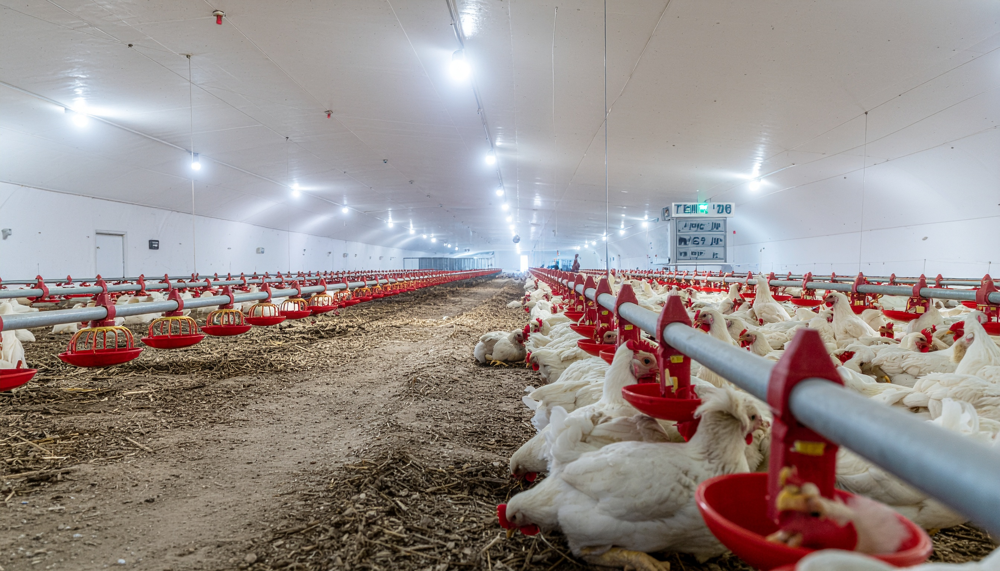
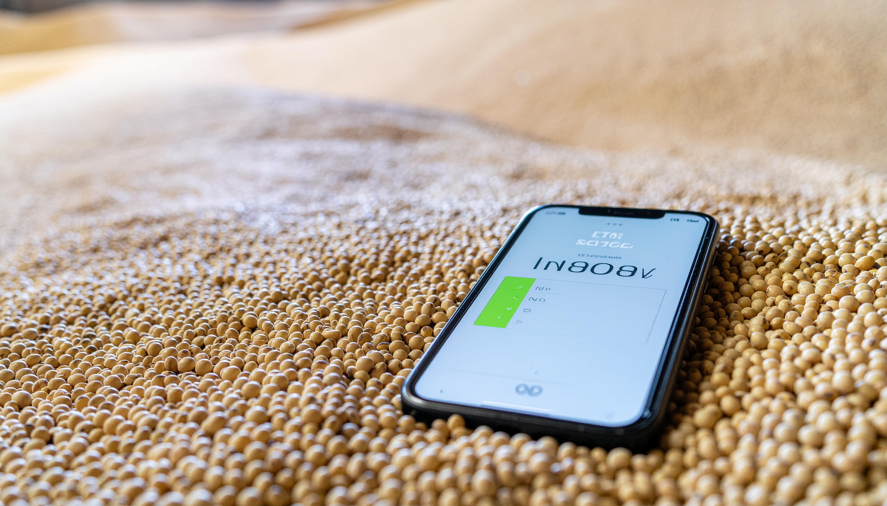
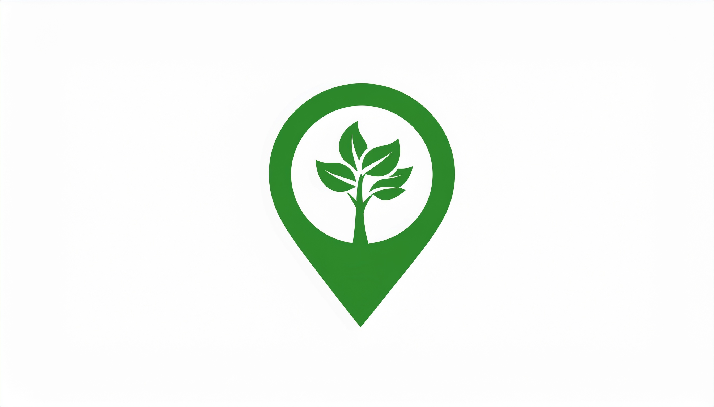
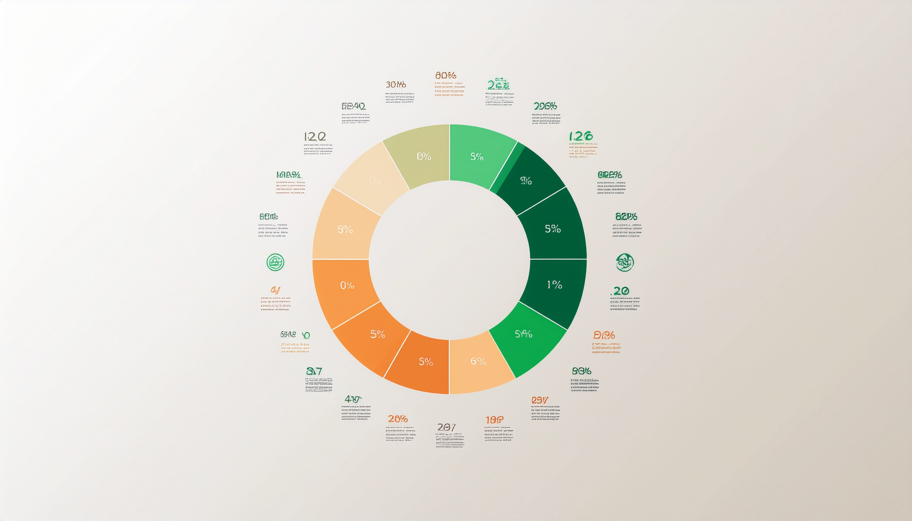

Risco Iminente
Controle Térmico
Aves e suínos sofrem com a falta de climatização. Apagões causam estresse térmico severo e mortalidade rápida de lotes inteiros.
Proteja sua safra e seu rebanho dos apagões. Descubra a viabilidade da energia limpa e alcance a autossuficiência no campo paranaense.
As quedas na rede elétrica convencional geram impactos severos e perdas irreparáveis na produção do Paraná.

Aves e suínos sofrem com a falta de climatização. Apagões causam estresse térmico severo e mortalidade rápida de lotes inteiros.

A interrupção do resfriamento faz com que tanques inteiros de leite ordenhado azedem e precisem ser descartados por segurança sanitária.

Geradores a diesel salvam a produção em emergências, mas possuem custo de operação altíssimo, manutenção complexa e alta emissão de CO₂.
Tecnologias sustentáveis inteligentes para transformar resíduos e luz solar em blindagem contra apagões.

Sensores conectados alertam sobre variações de umidade e temperatura nos silos em tempo real antes que os grãos estraguem.

Lógica aplicada para analisar as demandas específicas de Grãos, Hortaliças, Laticínios e Pecuária.

Soluções de armazenamento hermético que evitam a proliferação de pragas sem depender de climatização elétrica constante.
Faça o diagnóstico energético e descubra o tamanho da sua proteção contra perdas financeiras.

Insira as informações técnicas da sua propriedade para gerar o relatório de vulnerabilidade, viabilidade e impacto ODS.
* Análise baseada em regras fiscais do Paraná, diretrizes de sustentabilidade do CIBiogás e metas ODS 7 e 12.